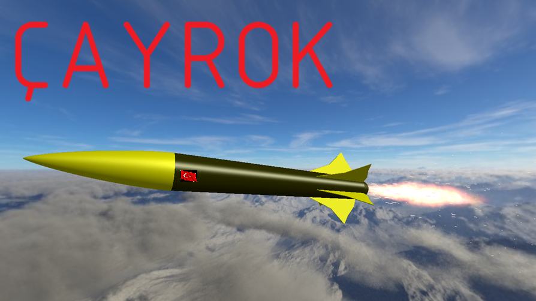

AHET ÇAYROK
ÇAYROK roketin ismi. AHET rumi'nin (rumi her zaman küçük harfle yazılır) havacılık bölümü. AHET tarafından geliştirilen ÇAYROK deneysel bir rokettir. Bu projenin yapımı 19 Mart 2025'de başlamıştır. Roketin belirli bir boyaması şuanda bulunmamaktadır.
Zaman çizelgesi
19 Mart: Proje başlangıcı. İlk tasarım yapıldı. İlk simülasyon yapıldı.Bu roketin kanatçık tasarımı da bu gün yapıldı.
20 Mart: Roket tasarımında geliştirilmeler yapıldı. Yine simülasyonlar yapıldı.
27 Mart: Kanatçık denemeleri yapıldı. Aynı model 3 kanatçıklı, 4 kanatçıklı, 5 kanatçıklı, 6 kanatçıklı ve 8 kanatçıklı olmak üzere test edildi. En iyi sonuç 4 kanatçıklıda çıktı ancak roket güzel gözüksün diye 6 kanatçık kullanılmaya devam edildi.

Teknik Detaylar

OpenRocket'deki çizimi
Maksimum hız: 281m/s (7400M520-P-0 MOTORUYLA)
Maksimum irtifa: 4422 metre (7400M520-P-0 MOTORUYLA YERDEN FIRLATILIRSA)
Ağırlık: 15.684 gram
Uzunluk: 163cm
Çap: 15cm
Denge: 1,03 cal (Ağırlık merkezi ve basınç merkezi arasındaki uzaklığın roketin çapına oranı)
Mühendislik Süreci
Roketin arka kısmına eklenen konik kuyruk geçişi için bir simülasyon yapıldı. Konik kuyruklı ve konik kuyruksuz modellerin simülasyon grafikleri karşılaştırıldı. Konik kuyruk olunca aerodinamik taban sürtünmesinin önemli ölçüde azaldığı fark edildi.
İşte burdaki grafiklerde simülasyon sonuçlarımızı görebilirsiniz:
 Kuyruk konisi olmadan
Kuyruk konisi olmadan
 Kuyruk konisiyle olan
Kuyruk konisiyle olan
Roketin kaç kanatçıklı olacağına karar vermeden önce ilk tasarımda 6 kanatçık seçilmişti. Bu ilk başta rastgele olarak seçildi. Sonra çeşitli sayılarda kanatçıklarla simülasyonlar yapıldı.
İşte bu grafiklerde çeşitli sayıda kanatçıklarla olan simülasyonları görebilirsiniz.